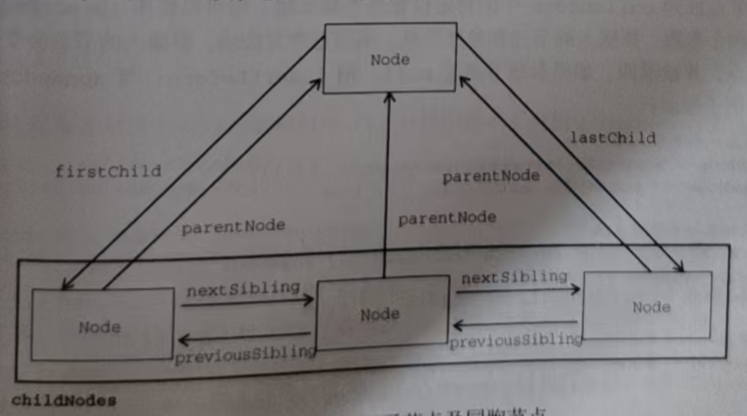

文档中的所有节点都与其他节点有关系。这些关系可以形容为家族关系,相当于把文档树比作家谱 。 在 HTML 中， <body>元素是<htm1>元素的子元素，而<html>元素是<body>元素的父元素。<head>元素是 <body>元素的同胞元素，因为它们有共同的父元素<html>。
每个节点都有一个 childNodes 属性 用于获取 当前节点的所有子节点的集合 返回值是一个NodeList(节点列表), 其中包含一个NodeList 的实例 。NodeList 是一个类数组对象 , 用于存储可以按位置存取的有序节点。注意，NodeList并不是Array的实例，但可以使用中播号访问它的值，而且它也有length属性。NodeList 对象独特的地方在于，它其实是一个对DOM结构的查询，因此DOM结构的变化会自动地在odeList中反映出来。我们通常说wodeList是实时的活动对象，而不是第一次访问时所获得内容的快照。
下面的例子展示了如何使用中括号或使用item() 方法访问NodeList中的元素
const someNode = document.getElementById('someNode')
console.log(someNode.childNodes); // [text, h1, text, p, text, p.retract, text, p.retract, text, code, text, script]
let arr = someNode.childNodes
let firstChild = someNode.childNodes[0] // #text
let secondChild = someNode.childNodes.item(1) // h1
let count = someNode.childNodes.length // 12
console.log(firstChild, secondChild, count);
console.log(Array.from(arr));
使用中括号或item()方法都是可以的,但多数开发者倾向于使用中括号，因为它是一个类数组对象。注意 , length属性表示那一时候Nodelist 中节点的数量 。可以使用解构或Array,prototype.slice 把NodeList对象转换为数组或者是。Array.from 比如:
let arrayOfNodes = Array.prototype.slice.call(someNode.childNodes, 0);
当然 , 使用Array.from() 静态方法也是可以的 , 哎我刚刚不是提到过吗
let arr = someNode.childNodes
console.log(Array.from(arr));
每个节点都有一个parentNode 属性 指向父元素 , 只找一层 ，指向其DOM树中的父元素。chilNodes中的所有节点都有同一个父元素 , 因此它们的 parentNode 属性都指向同一个节点。此外，chilaNodes 列表中的每个节点都是同一列表中其他节点的同胞节点。 ( 都是同级 ) 而使用previoussibling (找上面的兄弟元素) 和nextsibling (找下面的兄弟元素) 属性可以在这个列表的节点间导航。这个列表中第一个节点的previoussibling属性是nu11，最后一个节点的nextsibling 属性也是nu1l，如下所示:
if (someNode.nextSibling === null) {
console.log("Last node in the parent 's childNodes ");
} else if (someNode.previousSibling === null) {
console.log("First node in the parent 's childNodes ");
}
注意，如果 childNodes中只有一个节点,则它的previousSibling和nextSibling 属性都是 null。
父节点和它的第一个及最后一个子节点也有专门属性: firstchild ( 父节点的第一个子节点 ) 和1astchild ( 父节点的最后一个子节点 ) 分别指向chi1dNodes 中的第一个和最后一个子节点。someNode.firstchild 的值始终等于 someNode.childNodes[0]，而someNode.lastchild 的值始终等于 someNode.childNodes[someNodechilanodes.length-1]。如果只有一个子节点,则 firstchild和1astchild 指向同一个节点。如果没有子节点，则firstchild和lastchild都是nu11。上述这些节点之间的关系为在文档树的节点之间导航提供了方便。
有了这些关系 , childNodes属性的作用远远不止是必备属性那么简单了。这是因为利用这些关系指针 , 几乎可以访问到文档树中的任何节点 , 而这种便利性是childNodes的最大亮点。还有一个便利的方法是 hasChildNodes() , 这个方法如果返回true 则说明节点有一个或多个子节点 相比查询ChildNodes 的length 属性 , 这个方法无疑更方便
最后还有一个所有节点都共享的关系。ownerDocument属性是一个指向代表整个文档的文档节点的指针。所有节点都被创建它们(或自己所在)的文档所拥有，因为一个节点不可能同时存在于两个或者多个文档中 。这个属性为迅速访问文档节点提供便利 , 因为无须在文档结构中逐层上溯了
页面里所有的节点（元素、文本、注释等），不管嵌套多深，都是这个 Document 的 “孩子” 或 “后代”， 从创建那一刻起就只属于这个 Document。
注意 虽然所有节点类型都继承了 Node，但并非所有节点都有子节点。本章后面会计论不同节点类型的差异。